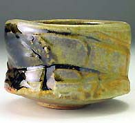
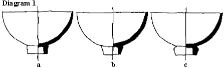
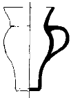
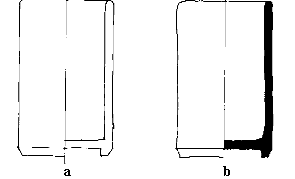

| Raw Glazing: A Traditional
Approach
Article by Australian studio potter Leonard
Smith
There are as many approaches to raw glaze as there are potters
and lately much has been written about the subject. This was not
the case when I was a student, in fact the information I received
was that the method was too difficult, needing special techniques;
and due to the requirement that raw glazes have large quantities
of clay in them, the glazes were very limited. However all those
beautiful Sung glazes I so admire are in fact once-fired and biscuit
firing is historically a very recent innovation. Glazing bisque
ware is mainly a European invention used to overcome the difficulties
of raw or once-fired tin glazes for majolica ware. Later it was
used during the industrial revolution when the pottery process was
divided into separate tasks requiring little or no skill.
Why raw glaze?
Raw
glazed bowl by Tony Ferguson
Raw glazing gives me that spontaneity I was seeking due to the
shorter time lapse between the pot's conception and its completion.
If desired, the pots can be thrown, trimmed and glazed in one day
although I prefer to throw pots in the afternoon, return in the
morning to turn and finish them, glaze them and then commence the
cycle again. This cycle breaks the monotony of throwing for eight
hours straight and gives my work day more variety. As I use brushwork
and glaze trailing for decoration I wait until a kiln load of pots
is dry and then I do all the decorating in one sitting. I find decorating
needs a real flow to develop and this is difficult in small sessions
on a daily basis.
Technical Considerations
Clays
I have made my own clay bodies for several years based on the Gulgong
(NSW) clay, Cresta B.B. from A.C.A. minerals. Most clays which accept
slip with few problems will raw glaze at the leather hard stage.
In my experience clays that are difficult to raw glaze are difficult
to throw and fire, so perhaps if you are having problems the solution
is to use a new body. In general a base clay with good green strength,
a modulus of rupture above 7.0 mpa (75 kg/-2cm), and a moderate
shrinkage to bone dry- no more than 8% -i s a good choice for raw
glazing. The addition of a coarser grade of silica aids the ability
of a clay to withstand the shock of re-wetting. The clay goes from
hard leather hard (where the clay crystals are in contact with each
other) back to the plastic state and this causes swelling of the
pot wall. Lately I have been using 100 mesh silica and have found
this imparts more than enough tooth to the body and doesn't notably
change its firing characteristics. It still rings resonantly when
struck after firing and displays almost zero porosity. I have used
60 mesh silica and it is excellent but a little more expensive.
For a long time I added 65 mesh sand which was quite coarse compared
to 60 mesh silica. It was also excellent in that it gave a nicely
textured clay body but it needed a lot of grinding to make the base
and galleries of the pots smooth after firing.
|
Body
Recipe |
1 |
2 |
3 |
4 |
|
Ball Clay |
70 |
65 |
60 |
65 |
|
Potash Feldspar |
15 |
15 |
20 |
15 |
|
Silica 200m |
 |
|
20 |
|
|
Silica 100m |
15 |
10 |
|
|
|
Silica 65m |
|
10 |
|
20 |
|
Red Iron Oxide |
1 |
1 |
|
|
Notes 1. My current clay fires gray and is very fine. 2. Fine sand
helps it withstand the shock of rewetting. 3. A white porcelaineous
body is more difficult to glaze in some shapes. 4. White stoneware
for big pots and hand building.
Glazes
If the glaze doesn't match the shrinkage of the body from the plastic
state one of two things will happen. If there is too much clay in
the glaze (an unusual occurrence), the surface will show cracks
like the surface of a clay pan and these usually lead to crawling
when fired. The solution to this is to calcine a portion of the
clay until the glaze fits. More usually the glaze will chip or flake
off the pot, particularly at edges of rims and handles. This indicates
that the glaze isn't plastic enough and needs more clay added to
it (it is surprising how much clay you can add and not have any
noticeable change in the glaze quality). Otherwise a more plastic
clay or bentonite may be substituted for some of the clay present
in the glaze batch.
For my technique the necessary amount of clay is the equivalent
of bentonite has approximately six times the shrinkage of clay.
10% ball clay and 3% bentonite equals about 30% of ball clay. Bentonites
are volcanic clays which have the ability to absorb huge quantities
of water into their structure and hence shrink considerably on drying.
Not all bentonites shrink six times as much as clay but most come
somewhere near it. Western Australian bentonite, which is now hard
to obtain, has only three times the shrinkage and is less useful
in low clay glazes but because of the fluxes it has present, it
would be an excellent material to use in a glaze with say 20% clay.
At present Commercial Minerals (Australia) are supplying bentonites
from the Hunter Valley of NSW (not from USA as was the case). So
far the Hunter Valley ones seem fine to me.
Bentonites are difficult to add to water. There are two approaches.
If you are mixing a batch of glaze, mix the bentonite in the dry
state with the other glaze materials, dispersing it evenly throughout,
then mix it with water in the normal way and pass the mix through
a 60 or 80 mesh sieve If you want to mix it into an existing glaze
slop, sprinkle it on top and leave it overnight, then stir the batch
with a paint stirrer in an electric drill and re- sieve before use
With the exception of some special glazes like iron blues, I have
been able to obtain most glaze qualities in the form of raw glazes.
Glaze Recipes
- Leo's Clear
- Potash Feldspar 15
- Talc 7
- Whiting 19
- Silica 30
- Ball Clay 28
This glaze is a very unusual glaze with 30% silica and is an
excellent raw glaze. With 2% iron it is a good Celadon and with
10% iron a Teadust/ Tenmoku. It is very craze resistant and durable.
I originally developed it from the Calcium Alumina Silica Eutectic.
N.B. Glazes are made up with sufficient water to give a liter weight
of between 1300 and 1400 gm per liter
Design
Not many articles talk about this aspect of raw glazing, but it
is probably the most important one for a high success rate with
the technique. Raw glazing demands consideration of the design and
structure of the pot. You must consider how you are going to hold
the pot when dipping it into the glaze bucket. Although big pots
can be sprayed this is not economical for production runs of pots.
To facilitate dipping most of my pots are either undercut or have
a substantial foot ring. A turned foot ring is ideal and one soon
learns the type which integrates with your pot designs and gives
enough grip to invert and dip into the glaze (remembering that the
clay is usually still flexible at this stage and after dipping softens
considerably and quickly).

In diagram 1 type A is manageable, but B is a little difficult
to grasp, whilst C gives the best grip of all. Remember that the
foot ring must be thick enough to withstand the pressure necessary
to hold the pot upside down when dipping.
Dia
2
As a lot of my forms don't have a foot ring, I have found that
a bevel as in diagram 2 works well, allowing the pot to be dipped
to within 5 mm of the bevel. Remember that the diameter to be held
must fit comfortably into the hand Any pot over 100 mm on its base
is best held with two hands This may necessitate a different design
especially as these pots are likely to be much heavier and therefore
harder to hold. Wide flat forms are held between two hands on their
rims and the whole dipped in one operation. The rim is then touched
up with a brush when the glaze has dried. From a structural point
of view pots for raw glazing need to be thrown a little thicker
than normal. It is important to glaze in such a way that as little
stress as possible is caused to the pot. This normally means dipping
quickly Dipping one half and then the other is a sure way to split
the pot, particularly if it is fairly wide and flat.
Dia
3
Sharp corners, especially on the inside of pots, should be avoided
Casseroles are rounded inside even though from the outside they
appear sharply angled. Pots as in 3(a) will almost certainly crack
at the change of direction. They should be made as in diagram 3(b).
I can't overemphasize the importance of even cross sections. Nearly
all my failures are a result of the cross sections of the pots being
uneven It may be that I turned a base thinner than the walls or
a section of the wall was thinner than that above it. If these pots
survive the initial rewetting they are sure to crack on drying.
Sometimes they can be repaired by brushing some thick glaze into
the cracks but this is not always a solution. The best solution
is to have pots with even sections
Method
Mugs, cream jugs and similar pots: I apply my handles after the
pots have been turned and whilst they are still soft leather hard,
i.e. cheese hard. I then allow the handles and the pots to equalize
in stiffness before glazing. One sure way to make handles collapse
is to glaze them before this equalization has occurred. Once the
handles and the pots show the barest sign of whiteness on their
edges, I glaze them I usually don't bother waxing feet or lid settings.
I pour glaze into the inside and then pour it out quickly whilst
turning the pot to completely cover the interior. Then I immediately
dip the pot down to my fingertips, give a little twist of the wrist,
pull the pot out, shake downwards sharply, turn it over and place
it back on the pot board. If the pot has a gallery, I run my finger
around the gallery to remove most of the glaze and then leave the
pots to first soften and then dry. The next day when the pots are
again leather hard, I sponge any runs off and sponge any galleries
and lids clean I have used this technique on articles from 450 mm
jugs to 30 mm tea strainers and I've never lost a handle or had
a pot split, providing it complied with the criteria of the design
section.
Teapots: The greatest test of any raw glazer is teapots. After
assembling the pots I put them into the damp cupboard to equalize
the moisture content of the parts and their joins. Usually with
the next day's glazing I pull them out and allow them a couple of
hours in the open air and glaze them after everything else I again
pour glaze inside, about a cupful, and pour it out, starting on
one side of the spout and turning until the last bit of glaze pours
from the spout. I then blow down the spout to clear the strainer
holes and immediately dip the outside, giving a twist as I go. When
I drain out the pot I usually put one finger on the gallery for
extra support whilst I shake off the excess glaze. Again once the
pot is upright on the pot board I blow down the spout as hard as
I can to ensure the strainer holes are clear. I then wipe the gallery
with my finger to clear it of glaze and touch up when the pot has
returned to the leather hard state.
Bowls, plates, lids etc: Usually if a bowl can be held by the foot
ring I use the same method as mugs etc. except that I like to glaze
the underneath of a foot ring. To do this I use a slip trailer with
a large orifice filled with glaze. I squeeze the glaze out into
the area contained by the foot ring till it is covered and then
simply suck up the excess. The inside and outside are then glazed
as above.
When glazing objects that have nothing to hold on to, like lids
or plates, I first dip my hands in glaze, then pick up the piece
with both hands, immerse the lot in the glaze, letting go completely
for a fraction of a second, ensuring that any area the fingers touch
is covered in glaze, and catch it. I then remove it, give it a sharp
shake to drain off the excess glaze and place it on a pot board
for sponging the next day My pot boards are wooden and relatively
non porous and raw glaze is easy to remove from them with a sponge.
Any pots I anticipate difficulty with, I wax with either a paraffin
wax/kerosine mix or liquid wax emulsion. These pots usually need
touching up, but wait until the glaze is dry and use a mop type
brush to carefully build up the glaze. Raw glazes handle and fettle
very easily due to the clay imparting excellent strength to the
glaze surface. Another advantage of raw glaze is that it allows
me to pick up the pot without damaging its surface when I am decorating
with brushwork
Firing and Firing Cycles
Usually firing raw glazed pots is the same as firing a normal bisque
cycle then adding a glaze cycle to the end of it, Some clays demand
very gentle treatment during the water of crystallization release
phase and quartz inversion periods of the firing. It is my experience
that raw glaze will also present few firing problems and lately
I've been once firing in my fibre kiln in 13 hours. In the wood
kiln the cycle is between 16 and 20 hours . A 22 - 24 hour firing
cycle is very conservative, but it offers a starting point for any
one starting out. It is accomplished by leaving one burner on overnight
to get from 0°C to 350°C. A 16 hour cycle is a good average
firing with average temperature rise of 50°C/hr in and glazes
I use. It should go without saying that before packing the kiln,
the pots should be thoroughly dry. It is my practice to pack the
kiln with all the pots touching each other as the completion of
shrinkage that occurs ensures good gaps between the pots by the
time the glazes begin to melt. Large pots and platters may need
some powdered alumina under them to allow for the large shrinkage
and ensure that they don't get caught on the shelf and crack. If
it isn't your normal practice to pull test rings (preferably E/W)
to determine that oxidation is complete before you start reduction,
I suggest you do, because you will not have a chance to rectify
lack of oxidation in a later firing and bloating may occur.
Conclusion:
I've tried to cover my technique for raw glazing in the hope that
you will be encouraged to try it. However, there is no substitute
for practice and practice will lead to craftsmanship. As a Chinese
philosopher said: "I hear, I forget; I see, I understand; I
do, I remember."
References A Potters' Guide to Raw Glazing and Oil Firing , Dennis
Parks, Pitman 1980. Studio Potter, Vol, 7, No 1, Six articles in
an issue devoted mainly to raw glazing. Pottery in Australia, Vol,
18, No 1, Glazing in the Raw John Edye, pages 86-40. Ceramics Monthly,
October 1976 pages 43-48 'Single fire Glazes', Phyllis Ihrman.
Article and diagrams courtesy of Leonard
Smith.
More Articles
|